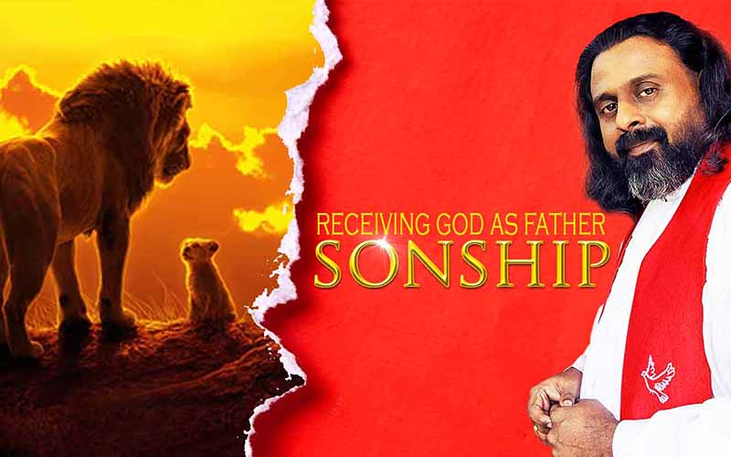

Welcomed into the Family of God
പുത്രത്വം! വളരെ ലളിതമായി ബിസിനസ്സ് ചെയ്യാൻ ദൈവം ഇഷ്ടപ്പെടുന്ന രീതിയാണിത്. നിങ്ങൾ ദൈവവുമായുള്ള ബിസിനസ്സാണ് ഉദ്ദേശിക്കുന്നതെങ്കിൽ, ക്രിസ്തുവിന്റെ ശരീരത്തിൽ ഒരു പിതാവിന് പുത്രനാകുക എന്നതിന്റെ അർത്ഥമെന്താണെന്ന് നിങ്ങൾ ശരിക്കും പഠിക്കേണ്ടതുണ്ട്. ദൈവത്തിന്റെ ജനം അവന്റെ ഛായയിൽ സൃഷ്ടിക്കുകയും അവനെപ്പോലെ ആകുകയും ചെയ്തതുപോലെ, പുത്രത്വത്തിന് യഥാർത്ഥത്തിൽ ഒരു മകന്റെ ഹൃദയം ഉണ്ടായിരിക്കുന്നതിൽ ക്രിസ്തുവിനുണ്ടായിരുന്ന മനോഭാവമാണ് വേണ്ടത്...
"പുത്രത്വത്തിന്റെ ആത്മാവ്" സ്വർഗ്ഗത്തിലുള്ള നമ്മുടെ പിതാവുമായി ബന്ധപ്പെടാൻ ഞങ്ങളെ സഹായിച്ച ഒന്നാണെന്ന് മുമ്പ് ധാരാളം ആളുകൾ കരുതിയിരുന്നു. തീർച്ചയായും അത് ശരിയാണ്, എന്നിരുന്നാലും അത് മാത്രമല്ല. പുത്രത്വത്തിന്റെ ആത്മാവ് ഒരു മനോഭാവമാണെന്നും ക്രിസ്തുവിന്റെ ശരീരമാകുന്ന സഭയിലും നമുക്ക് നൽകിയിട്ടുള്ള ആത്മീയ പിതാക്കന്മാരോട് കാണിക്കുന്ന മൂല്യങ്ങളാണെന്നും ഇപ്പോൾ നാം തിരിച്ചറിയുന്നു. തീർച്ചയായും എല്ലാ ആളുകളോടും നമുക്ക് ഉണ്ടായിരിക്കേണ്ട അതേ മനോഭാവമാണ്. പരിശുദ്ധാത്മാവിന്റെ പ്രവർത്തനത്താൽ നമ്മുടെ ഉള്ളിൽ യഥാർത്ഥമാക്കിയ ക്രിസ്തുവിന്റെ സ്നേഹമാണിത്.
ദൈവം നൽകിയ അനുഗ്രഹത്തിന്റെ ഏറ്റവും പൂർണ്ണമായ അളവിൽ ജീവിക്കണം എങ്കിൽ, ശുശ്രൂഷയിൽ എങ്ങനെ ഒരു പുത്രൻറെ മനോഭാവം ഉണ്ടാകണം എന്ന് നിങ്ങൾ പഠിക്കേണ്ടതുണ്ട്. ഇത് ബുദ്ധിമുട്ടുള്ള കാര്യമല്ല; അത് മനസ്സൊരുക്കമാണ്. ഒരു മകന് ഉണ്ടായിരിക്കേണ്ട ഹൃദയം നിങ്ങൾക്ക് ശരിക്കും ഉണ്ടോ? നിങ്ങൾക്ക് ക്രിസ്തുവിന്റെ ഹൃദയമുണ്ടോ - ഒന്നുമല്ലാതിരിക്കാൻ തയ്യാറാണോ, ഒരു ദാസനാകാൻ തയ്യാറാണോ, മറ്റുള്ളവരുമായുള്ള ബന്ധത്തിൽ വിനയപൂർവ്വം സ്വാഭാവികമായിരിക്കാൻ തയ്യാറാണോ? ഭൗമീയ സോഹദര-സഹോദരീ ബന്ധംപോലെ ക്രിസ്തുവിൽ നിങ്ങൾക്കു ദൈവം നൽകിയ വ്യക്തികളെ സാഹോദര്യ ബന്ധത്തിൽ സ്നേഹിക്കാൻ തയ്യാറാണോ?
ജോഷ്വയുടെ ജീവിതത്തിൽ മോശയോടും, യോസേഫ് പോത്തിഫറിനോടും, ദാവീദ് ശൗലിനോടും, എലീശാ ഏലിയായോടും, ശിഷ്യന്മാർ ക്രിസ്തുവിനോടും, തിമോത്തി പൗലോസിനോടും, രൂത്ത് നവോമിയോടും ഉള്ള മനുഷ്യരോടുള്ള പുത്രത്വത്തിന്റെ ഈ മാതൃക നാം കാണുന്നു. ആളുകൾ തങ്ങളുടെ ഹൃദയം മറ്റൊരാൾക്ക് നൽകിയതിന് തിരുവെഴുത്തുകളിൽ ധാരാളം ഉദാഹരണങ്ങളുണ്ട്, അത് യഥാർത്ഥത്തിൽ "പുത്രത്വത്തിന്റെ ആത്മാവായിരുന്നു."
"യേശുക്രിസ്തുവിന് ഉണ്ടായിരുന്ന അതേ മനോഭാവം ഉണ്ടായിരിക്കുക" എന്ന് ബൈബിൾ പറയുന്നു. സുവിശേഷങ്ങളിൽ മറ്റ് മനുഷ്യരെ സേവിക്കുകയും സ്നേഹിക്കുകയും ചെയ്യുന്ന ആളുകളെ നാം കാണുന്നു, അങ്ങനെ ചെയ്യുന്നതിലൂടെ ക്രിസ്തുവിനെ മാതൃകയാക്കുന്നു....
"ദൈവത്തെ സ്നേഹിക്കുക എന്നാൽ ആളുകളെ സ്നേഹിക്കുന്നതാണെന്ന് നാം പഠിക്കണം. അതില്ലെങ്കിൽ നാം ദൈവത്തെ സ്നേഹിക്കുന്നുവെന്ന് പറയാനാവില്ല. നാം സഭയിലും ക്രിസ്തുവിന്റെ ശരീരത്തിലും നമ്മുടെ നേതാക്കളോടും പിതാക്കന്മാരോടും പെരുമാറുന്ന വിധത്തിൽ ഈ സ്നേഹത്തിന്റെ തെളിവുകൾ ഇല്ല. ദൈവം നമുക്ക് തന്ന നേതാക്കളെ സ്നേഹിക്കുന്നതിലൂടെയും ദൈവം നമുക്ക് ചുറ്റും സ്ഥാപിച്ചിരിക്കുന്ന ആളുകളെ സ്നേഹിക്കുന്നതിലൂടെയും ദൈവത്തോടുള്ള സ്നേഹം കാണിക്കുന്നതിനുള്ള വളരെ പ്രായോഗികമായ ഒരു മാർഗം നമുക്ക് ഉണ്ടെന്ന് നാം മനസ്സിലാക്കാൻ പോകുന്നു. ഈ സ്നേഹം ഹൃദയത്തിൽ നിന്ന് വരണം, അത് യഥാർത്ഥമായിരിക്കണം...
"ക്രിസ്തുയേശുവിലെ വിശ്വാസത്താൽ നിങ്ങൾ എല്ലാവരും ദൈവത്തിന്റെ മക്കൾ ആകുന്നു. ക്രിസ്തുവിനോടു ചേരുവാൻ സ്നാനം ഏറ്റിരിക്കുന്ന നിങ്ങള് എല്ലാവരും ക്രിസ്തുവിനെ ധരിച്ചിരിക്കുന്നു. അതിൽ യെഹൂദനും യവനനും എന്നില്ല; ദാസനും സ്വതന്ത്രനും എന്നില്ല, ആണും പെണ്ണും എന്നുമില്ല; നിങ്ങൾ എല്ലാവരും ക്രിസ്തുയേശുവിൽ ഒന്നത്രേ. ഇതാണ് പുത്രത്വത്തിന്റെ ആത്മാവ്!!
Lesson 1, 2 and 3...
Lesson 4, 5 and 6...
ഈ വീഡിയോ സന്ദേശങ്ങൾ നിങ്ങൾക്ക് അനുഗ്രഹമായി എങ്കിൽ നിങ്ങളുടെ കൂട്ടുകാർക്കും ബന്ധുമിത്രാദികൾക്കും സഹവിശ്വാസികൾക്കും പങ്കുവയ്ക്കുമല്ലോ... ഞങ്ങൾക്കുവേണ്ടി പ്രാർത്ഥിക്കുക, കരുതുക!
നിങ്ങളുടെ സംശയങ്ങളും ചോദ്യങ്ങളും പങ്കുവയ്ക്കുന്നതിന് ഈ WhatsApp ലേക്ക് മെസ്സേജ് അയച്ചാലും
WhatsAppContact Me